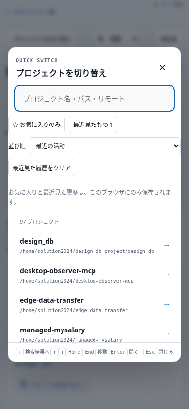
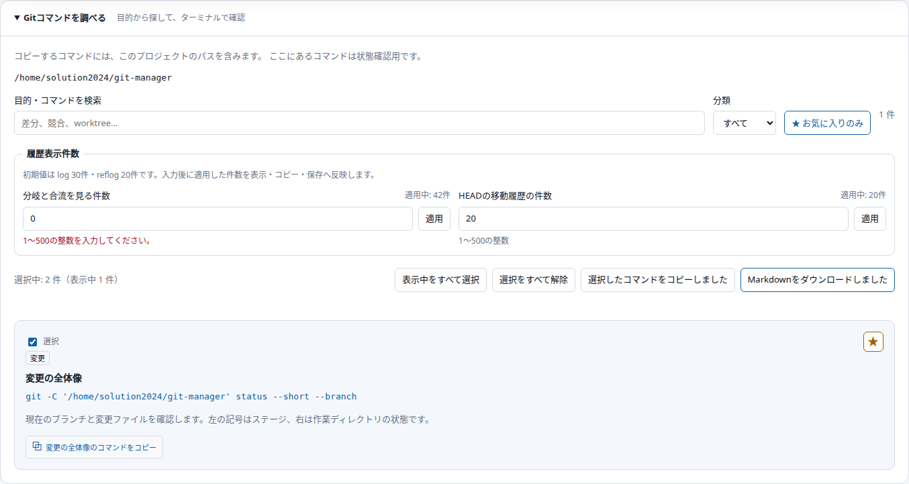
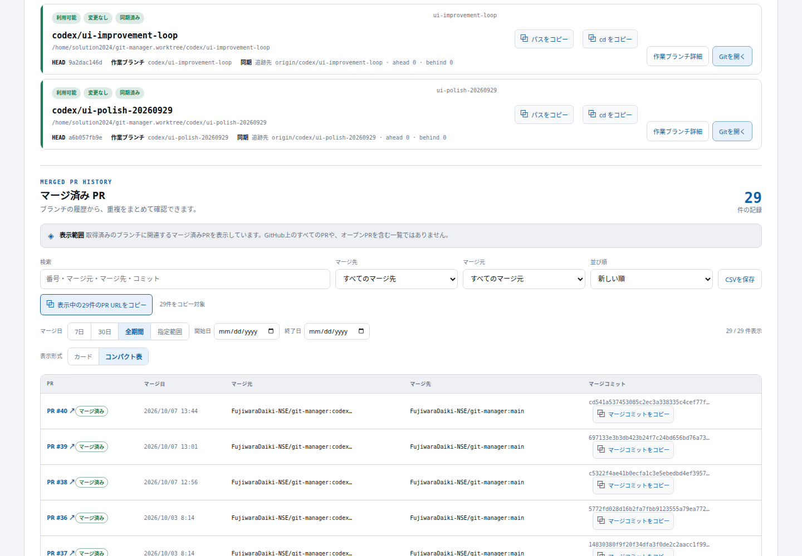

30点 + 14機能 × 5点 = 100点
10月9日に着手して未完了だった変更を、今回初めて検証・稼働反映しました。過去に加点済みの改善は重複計上していません。
| 画面 | 追加機能 | 効果 |
|---|---|---|
| プロジェクト切り替え | お気に入りだけを表示 | ホームで選んだプロジェクトに素早く移動できる |
| プロジェクト切り替え | 最近見たプロジェクト | ブラウザー内の閲覧履歴から戻れる。履歴の削除も可能 |
| プロジェクト切り替え | 名前・最近の活動で並べ替え | 一覧を目的に合わせて探せる |
| プロジェクト切り替え | 上下・Home・End・Enterの操作 | マウスを使わず候補を移動・決定できる |
| Gitガイド | コマンドのお気に入り | ブラウザーに保存し、よく使うものだけ表示できる |
| Gitガイド | コマンドの選択と一括コピー | 複数の確認コマンドを選び、対象パス付きでコピーできる |
| Gitガイド | Markdownチートシート保存 | 選んだコマンドと説明を資料として保存できる |
| Gitガイド | 履歴表示件数の設定 | log・reflogの件数を検証してから表示・コピー・保存に反映 |
| PR履歴 | マージ元で完全一致絞り込み | 同じ文字列を含む別のブランチを除外できる |
| PR履歴 | 開始日・終了日で絞り込み | ローカル暦日の両端を含む範囲を指定できる |
| PR履歴 | 表示中URLの一括コピー | 絞り込んだPRのリンクを共有資料へ渡せる |
| PR履歴 | コンパクト表 | 複数PRを同じ列で比較できる。狭い画面は表内で横スクロール |
| プロジェクト一覧 | CSV保存 | 表示中のプロジェクト・件数・条件を表計算へ渡せる |
| プロジェクト一覧 | Markdownコピー | 表示中の一覧をレビュー資料へ貼り付けられる |
frontendテスト141件、backendテスト164件成功。本番ビルド成功。レビューP1指摘なし。指定Composeラッパーで起動反映後にも、実データでクリップボード・CSV・Markdown・キーボード・日付境界・お気に入り保存を検証しました。ブラウザーの実行時エラーは0件です。
390px幅で各画面の横方向オーバーフローがないことを確認。PR表は領域内で横スクロールできます。
アプリ：http://localhost:4412。frontend稼働、backend healthy、API ok:true。
プロジェクト切り替え（モバイル）

Gitガイド：不正な件数を拒否し、適用中の42件を保持

PRのマージ元・期間指定・表形式

点数は指定の加点基準によるもので、完全な品質保証ではありません。未取得の情報をゼロと扱わず、PRの情報取得範囲は既存表示のとおりです。お気に入りと閲覧履歴はブラウザー内に保存されます。既存依存関係の脆弱性3件（high 2 / critical 1）および既存警告は今回未解消です。